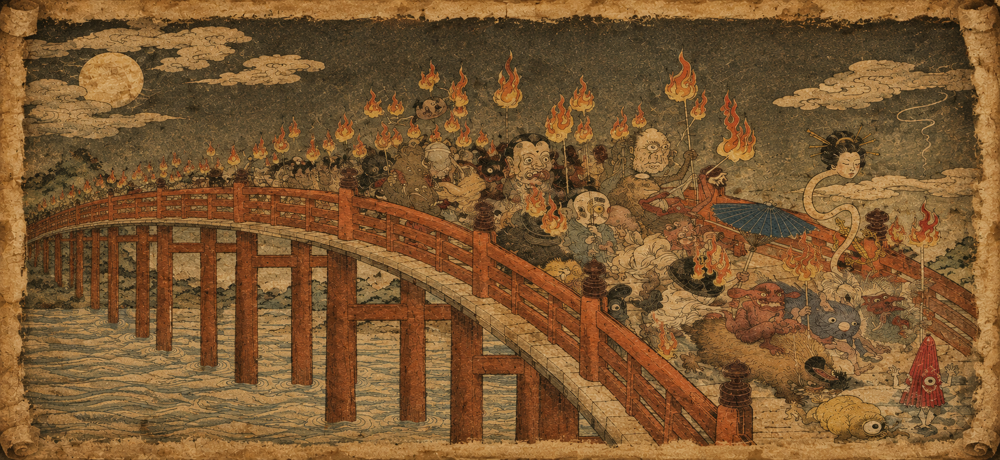
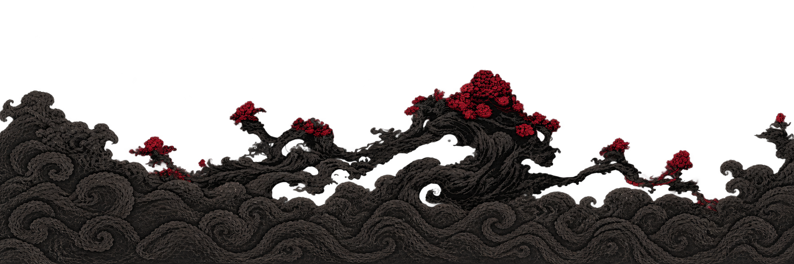
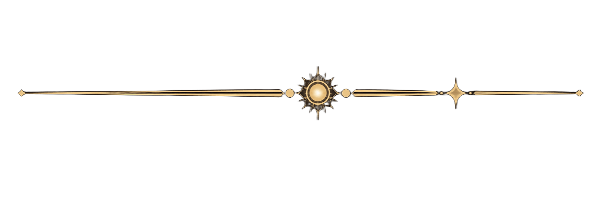
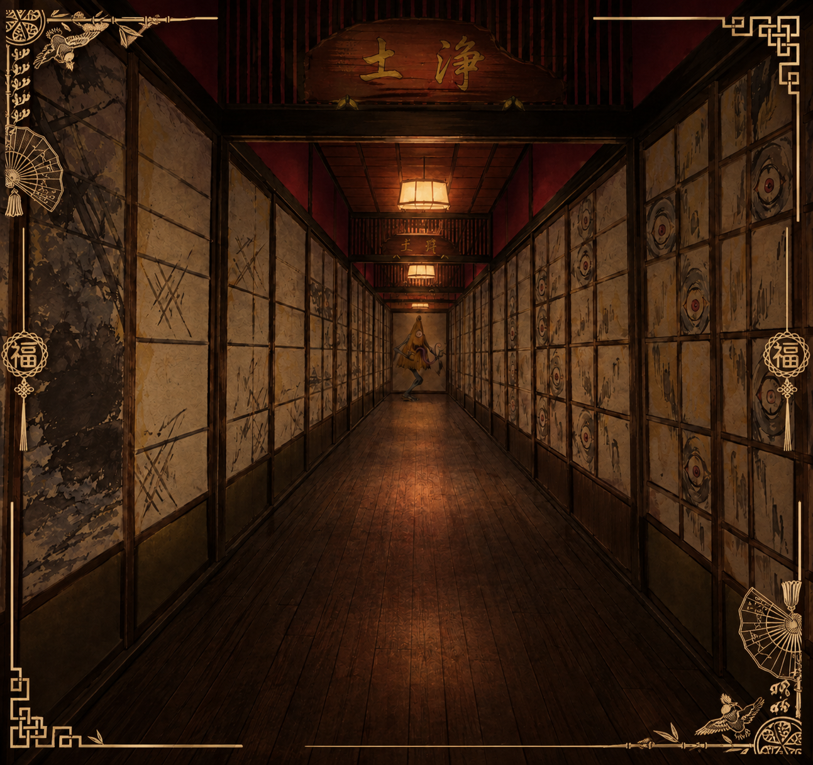
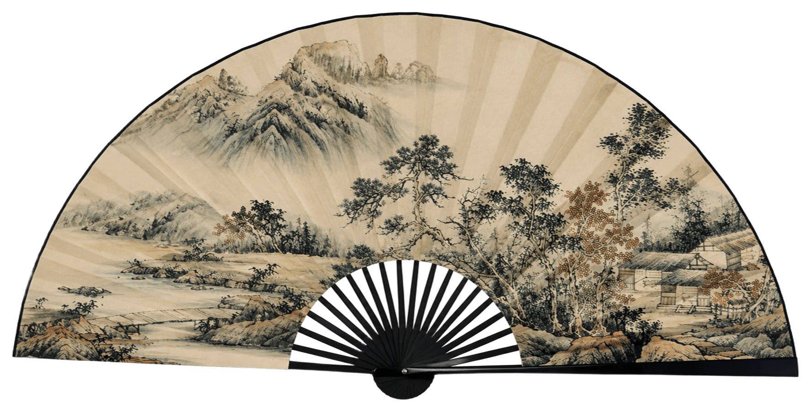
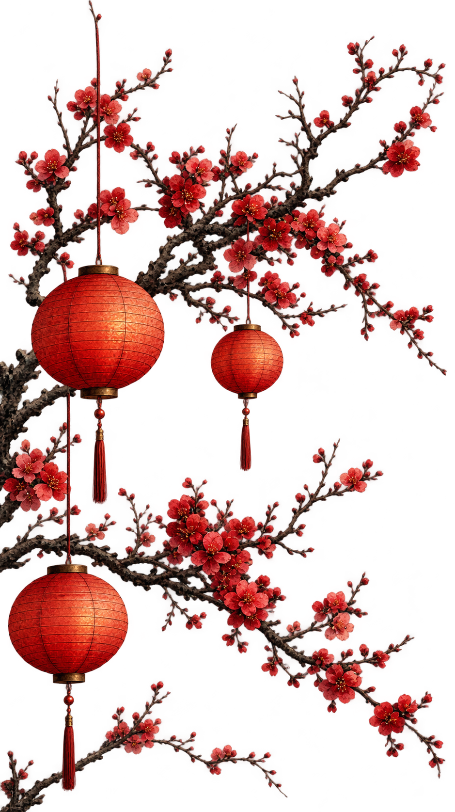

Os Yōkai são criaturas sobrenaturais do folclore japonês, que podem ser animais, espíritos ou monstros. Suas histórias surgiram de crenças e da tentativa de explicar fenômenos misteriosos. Ao longo dos séculos, foram popularizadas por livros e pinturas. Nem todos são malignos, e hoje continuam presentes em animes, mangás, filmes e jogos.

Hyakki Yagyō, ou “Procissão Noturna dos Cem Demônios”, é uma lenda japonesa que conta que, durante a noite, diversos yōkai saem para percorrer as ruas. Acreditava-se que encontrar essa procissão poderia trazer perigo. Ao longo dos séculos, a história foi retratada em pinturas, pergaminhos e livros, tornando-se uma das lendas mais conhecidas sobre os yōkai.


O site Yōkai no Sekai surgiu a partir de uma experiência durante meu curso de japonês, quando foi anunciado um evento dedicado aos yōkai, criaturas sobrenaturais do folclore japonês. Fiquei responsável pelo desenvolvimento do site do evento e, a partir disso, surgiu a ideia de criar um espaço que reunisse informações sobre essas criaturas e suas histórias. Inspirado pela cultura japonesa, por suas lendas misteriosas e pela atmosfera sobrenatural que envolve os yōkai, desenvolvi uma identidade visual que remete a antigos corredores japoneses, portais misteriosos e criaturas escondidas nas sombras. Assim, o Yōkai no Sekai nasceu com o propósito de apresentar esse universo fascinante de forma imersiva, despertando a curiosidade dos visitantes e convidando-os a explorar os mistérios do folclore japonês.